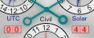

, home to many of the world's finest watchmakers.
It is a complex multi-dial watch with many traditional complications plus a few modern twists.
, home to many of the world's finest watchmakers.
It is a complex multi-dial watch with many traditional complications plus a few modern twists.
There are 21 hands plus 9 additional indicators on the front side. The hours, minutes and seconds are standard (but with no numbers on the dial). There is an am/pm dot just above the 12 o'clock position (white for am, black for pm). The thin gray-blue hand with the circle on the outermost dial indicates the day of the month. The first twist on the classic look is that the day numbers 29 thru 31 appear only as needed. Here, for example, is the appearance for Nov 29, 294 CE.
The white hand with a black tip indicates the last two digits of the year, read against
the inner gray dial with 100 divisions (zero is at the 12 o'clock position).
The thin white hand with a red tip indicates the two digit century, read against the same dial.
For dates BCE the scale runs backwards.
The example to the right shows the year 408 CE.
(Note: in order to ensure astronomical accuracy, EMERALD_PRODUCT cannot be set to dates
outside the range 4000 BCE thru 2800 CE.)
The primary hand of the subdial at 12 o'clock indicates the month.
The interior region of that dial, which is marked with the seasons,
rotates so that the boundaries between the seasons are properly aligned to the calendar months.
This changes according to the "calendar drift" from the tropical year. Since the
Gregorian calendar currently in effect is very closely aligned with the tropical year, it will not change
 significantly going forward in time, but moving backward into the range where the Julian calendar was in
effect (see below) will show a jump and then a slow drift over time; drag the century hand backwards to see the dial rotate.
(Note that this has nothing to do with the precession of the equinoxes against the stars, which may be seen on the back of
this watch).
significantly going forward in time, but moving backward into the range where the Julian calendar was in
effect (see below) will show a jump and then a slow drift over time; drag the century hand backwards to see the dial rotate.
(Note that this has nothing to do with the precession of the equinoxes against the stars, which may be seen on the back of
this watch).
For more precision, the tiny hand in the seasons subdial changes at the exact time of each equinox and solstice (not just the beginnings of the usual days). Both are correct for both hemispheres (the example above shows a southern hemisphere case). There are four small fixed dots on the month ring which mark the orientation of the seasons for the year 2000 CE.
The primary hand on the subdial at 3 o'clock simply shows the current local time in 24-hour format
 while the small gray-green arrow shows the
while the small gray-green arrow shows the
The primary hand on the subdial at 9 o'clock shows the day of the week.
 The tiny hand is another of Geneva's twists, a fully general leap year indicator.
It points to 1, 2 or 3 in common years and 4 in regular leap years.
But the Gregorian calendar
skips 3 leap years every 400 years so the tiny hand points at 100 or 400 if one of the centurial rules applies.
This is known as a "secular perpetual calendar" in horology jargon.
EMERALD_PRODUCT hides the 100 and 400 prior to 5 Oct 1582,
when the Gregorian calendar was first put into effect, so you can tell
whether the Julian or Gregorian calendar is being used here for calculations.
The tiny hand is another of Geneva's twists, a fully general leap year indicator.
It points to 1, 2 or 3 in common years and 4 in regular leap years.
But the Gregorian calendar
skips 3 leap years every 400 years so the tiny hand points at 100 or 400 if one of the centurial rules applies.
This is known as a "secular perpetual calendar" in horology jargon.
EMERALD_PRODUCT hides the 100 and 400 prior to 5 Oct 1582,
when the Gregorian calendar was first put into effect, so you can tell
whether the Julian or Gregorian calendar is being used here for calculations.
The four small subdials indicate the times of the sunrise, sunset, moonrise and moonset events for the current day.
 The moonrise and moonset dials have am/pm dots above.
If there is no event for the current day the corresponding dial will read 12:00 and the am/pm dot will be red.
In Set mode, you can tap these dials to change the main time; subsequent presses advance to the next event.
The moonrise and moonset dials have am/pm dots above.
If there is no event for the current day the corresponding dial will read 12:00 and the am/pm dot will be red.
In Set mode, you can tap these dials to change the main time; subsequent presses advance to the next event.
The final twist is the moon phase indicator which shows a realistic terminator,
rotated to match its actual orientation in the
sky, exactly like the one on Chandra.
sky. To achieve the realistic terminator shape (unlike the disc-over-disc shape often
found on watches and clocks), EMERALD_PRODUCT uses small covers that move throughout the
lunar month to define the position of the terminator.
Superimposed on this is a retrograde hand showing the age of the current lunation.
Tapping the moon phase indicator in Set mode will advance to the next quarter phase.
On the back,
there are 16 hands
plus 12 additional indicators.
The primary hands show the
local apparent sidereal time.
The hour is read against the inner white dial of 24 numbers (hours of
right ascension, RA),
the minutes against the 60 unnumbered tick marks (minutes) on that dial.
The precession of the equinoxes
means that the position of the equinox moves with respect to the fixed stars.
But the zero point of right ascension is the vernal equinox.
So since Geneva's RA dial is fixed, the
rings holding the names and astrological symbols of the constellations of the zodiac rotate slowly
to compensate for the precession.
The white lines indicate the points where the ecliptic crosses the constellation boundaries (for the present era).
The sidereal hour hand thus indicates which constellation is currently highest in the sky.
(The minute hand has no relation to the constellations.)
In this example, the sidereal time is 22:51 in Aquarius in the year 2338 CE.
The outer white ring is divided into the months of the year with a hairline at the beginning of each month and tick marks for every other day; the black tick marks represent even days of the month, and the spaces between represent odd days. It, too, rotates with respect to the RA dial so that the Sun hand indicates the current date. (May 9 in this example.) But note that the relationship between the date ring and the zodiac ring is correct only at the position of the Sun hand, for two reasons: Because the Earth's orbit is elliptical (not an exact circle), the Sun moves more slowly against the stars at some times during the year than at others. Also, the Sun's motion is in the ecliptic plane which is tilted with respect to the reference plane of the RA coordinate system (the equator). So the Sun does not move at a constant rate around the RA dial during the year, but speeds up and slows down at intervals. The date ring rotates so that the current date is always under the Sun, but that means that other dates are in slightly different spots when the Sun gets there.
There are red hairline indicators over the zodiac ring (fixed at 0, 6, 12, and 18) which mark the positions of the equinoxes and solstices, and a dot between Aquarius and Pisces on the zodiac ring which marks the RA position of the vernal equinox in the year 2000. There are four smaller red hairline indicators over the date ring which move slowly to indicate the dates of the equinoxes and solstices. They stay close to the fixed indicators but they don't always line up exactly because as mentioned above the date ring does not match the zodiac ring except exactly at the Sun's position.
The Sun and Moon hands show their positions with respect to the the RA dial
and the constellations (and each other).
The red Ω-shaped hands show the positions of the
lunar ascending and descending nodes
(the ascending node indicator has the Ω rightside-up at 12 o'clock).
When the Sun and Moon coincide and are close to one of the nodes it is possible that there may be a solar eclipse;
when the Sun is close to one node and the Moon is opposite to it a lunar eclipse may occur.
The eclipse dial
 at the top center indicates if there is an eclipse happening at the observer's location and time.
See Predicting Eclipses with EMERALD_PRODUCT
for more information about predicting eclipses with the nodal hands and the eclipse dial.
at the top center indicates if there is an eclipse happening at the observer's location and time.
See Predicting Eclipses with EMERALD_PRODUCT
for more information about predicting eclipses with the nodal hands and the eclipse dial.
Also, note that when the ascending-node hand coincides with the vernal equinox
 (at the 12 o'clock position)
the Moon will reach extremes in several dimensions, including north and south declination,
northern and southern azimuths of rise/set points on the horizon, and altitudes crossing the meridian.
See here
for more detail.
(at the 12 o'clock position)
the Moon will reach extremes in several dimensions, including north and south declination,
northern and southern azimuths of rise/set points on the horizon, and altitudes crossing the meridian.
See here
for more detail.
The subdial at 2 o'clock shows
apparent solar time
(sundial time) in 12-hour format.
(Note that the Sun hand and the sidereal hour hand will always coincide when the solar time is 12:00.)
The subdial at 10 o'clock shows UTC in 24-hour format.
The subdial at 6 o'clock shows ordinary clock time with seconds and an AM/PM indicator.
The left window (beneath the UTC subdial) shows the first two digits of the year number (centuries),  the right window (beneath the Solar subdial) shows the last two digits. The windows turn red for years BCE.
 Finally, just inside the RA dial is a ring which shows the sidereal times
when the Sun and Moon illuminate the sky for this day.
The white region is bounded by sunrise and sunset and thus shows the daytime hours (in sidereal time).
The dark regions represent nighttime with gray when the Moon is up and black for full night.
There are also two tiny hands that indicate the (sidereal) times of moonrise and moonset.
In this example, it is about an hour before moonrise (as indicated by the sidereal hour hand), moonset is a bit before 3, and Libra is near the meridian.
Finally, just inside the RA dial is a ring which shows the sidereal times
when the Sun and Moon illuminate the sky for this day.
The white region is bounded by sunrise and sunset and thus shows the daytime hours (in sidereal time).
The dark regions represent nighttime with gray when the Moon is up and black for full night.
There are also two tiny hands that indicate the (sidereal) times of moonrise and moonset.
In this example, it is about an hour before moonrise (as indicated by the sidereal hour hand), moonset is a bit before 3, and Libra is near the meridian.
In Set mode, dragging the Sun hand changes the date by one year per revolution; dragging the Moon hand moves a (lunar) month per revolution; and dragging the node hands moves about 18 years per revolution. You can also drag the subdial hands and tap the century and year windows.
There are three pushers on the watch. When viewed from the front, the top left pusher advances a day at a time, the lower left one advances an hour, and the bottom right one advances to the next new moon, full moon, or quarter. The pushers flip around on the back side but otherwise maintain their function.
Also remember that since both sides of the watch always show the same time in many cases it may be easier to read (or set) a particular value by flipping the watch to the other side. For example, it's much easier to read the date on the front but the year on the back.